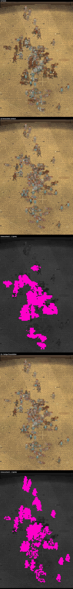
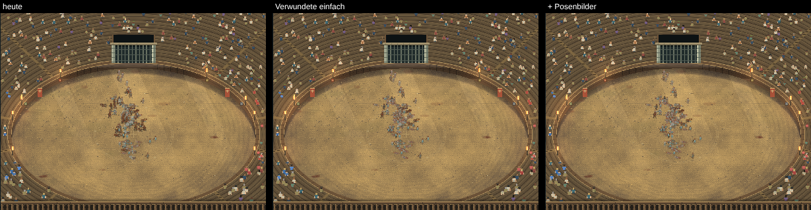

50 gegen 50, gleicher Augenblick. Reihen: 1) heute, 2) Verwundete einfach (kleine Blutflecken statt voller Figur), Unterschied pink, 3) zusätzlich Posenbilder, Unterschied pink. Zum Vergrößern Bild antippen.

In Spielgröße (heute / Verwundete einfach / + Posenbilder):

Messen: Grafik-Benchmark → „▶ Große Kämpfe testen“ → „Ergebnis kopieren“.